# Para replicar os resultados
set.seed(1984)
# Sorteia um número inteiro
y <- round(runif(n = 1, min = 0, max = 10^7))
# Cria um vetor x de comprimento 15
x <- vector(length = 20)
# Primeiro valor de x = 1
x[1] <- 1
# Loop
for (i in 1:19) {
x_chute <- x[i]
# Computa a distância
dist <- y - x_chute^2
# Atualiza o valor de x
x_chute_novo <- x_chute + dist / (2 * x_chute)
# Grava o valor de x para vermos a convergência
x[i + 1] <- x_chute_novo
}O método de Newton
Métodos de otimização numérica são frequentemente necessários para estimar modelos econométricos e resolver problemas de máximo/mínimo em geral. Em particular, para encontrar estimadores de extremo — como estimadores do método generalizado de momentos (GMM) ou estimadores de máxima verossimilhança (MLE) — é necessário resolver um problema de otimização. Na maior parte dos casos, estes métodos rodam no background de funções prontas, mas não custa entender um pouco mais sobre como eles funcionam, até porque um dos métodos mais populares, o método de Newton (e suas variantes) é bastante simples e intuitivo.
Exemplo simples
Como primeiro exemplo do método de Newton vou tomar emprestada uma sugestão deste tweet.

O algoritmo descrito no tweet para encontrar \(\sqrt{y}\) é basicamente o seguinte:
- Encontre um número \(x\) tal que \(x^2 \approx y\) (ex: \(y = 17\), \(4^2 = 16\));
- Compute a diferença \(d = y - x^2\) (\(d = 17 - 16 = 1\));
- Atualize \(x\) pela diferença \(d/2x\) (\(x = 4 + 1/8 = 4.125\))
- Repita 2 e 3, com o novo valor de x.
O código abaixo implementa os passos acima. Começo escolhendo um inteiro aleatório \(y\) entre \(0\) e \(10^7\). O desafio será encontrar \(\sqrt{y}\). Usando o comando set.seed(1984) você poderá replicar os resultados abaixo. O número sorteado foi \(6588047\) e \(\sqrt{6588047} = 2566.719\).
Para demonstrar a poder do simples método acima vou começar com um chute inicial bem ruim, isto é, vou escolher um \(x\) inicial igual a \(1\). Como quero mostrar os passos intermediários do algoritmo vou criar um vetor numérico que salva todos os valores de x a cada iteração. Há diversas maneiras de escrever o loop abaixo e ao longo do post vou mostrar três tipos de loop (for-loop, repeat e while).
Podemos ver graficamente como o algortimo se aproxima do valor verdadeiro de \(\sqrt{y}\) rapidamente, mesmo partindo de um ponto inicial distante. Em vermelho, está o valor correto de \(\sqrt{y}\).
plot(2:20, x[2:20], main = "", xlab = "Iteração", ylab = "x")
abline(h = sqrt(y), col = 2)
grid()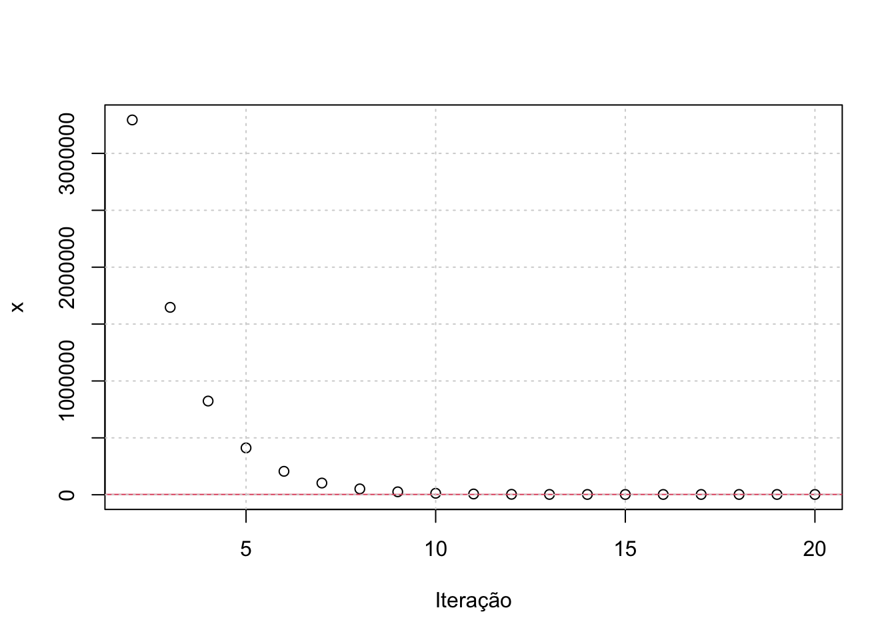
Como os primeiros valores do gráfico acima são muito altos, faço um segundo gráfico usando somente os últimos valores que foram computados.
plot(13:20, x[13:20], main = "", xlab = "Iteração", ylab = "x")
abline(h = sqrt(y), col = 2)
grid()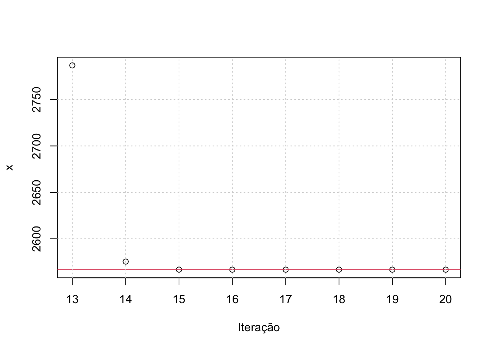
Note que depois de 16 repetições, a diferença entre \(x\) e \(y\) é tão próxima de zero que o R arredonda ela para 0.
x - sqrt(y) [1] -2.565719e+03 3.291457e+06 1.644446e+06 8.209418e+05 4.091915e+05
[6] 2.033204e+05 1.003928e+05 4.894506e+04 2.325311e+04 1.047078e+04
[11] 4.204686e+03 1.305444e+03 2.200559e+02 8.688284e+00 1.465521e-02
[16] 4.183812e-08 0.000000e+00 0.000000e+00 0.000000e+00 0.000000e+00Mas como funciona este algoritmo? Basicamente, estamos procurando a raiz de um polinômio. No caso, estamos buscando resolver \(f(x) = x^2 - y = 0\) (em que \(y\) é dado). A solução proposta pelo método acima é de aproximar este polinômio linearmente (usando a primeira derivada) e então encontrar a raiz desta aproximação. Para facilitar o exemplo vamos tomar \(y = 2\). Então temos o problema de encontrar a raiz do seguinte polinômio:
\[ P(x) = x^2 - 2 \]
Vamos tomar o valor \(x_{0} = 5\) como chute inicial. A aproximação linear de \(P(x)\) é a derivada com respeito a \(x\), isto é, \(2x\). Avaliada no ponto \(x_{0}\), temos \(P'(5) = 10\). Assim, temos uma reta de inclinação \(10\) que passa no ponto \((5, 23)\). Com isso podemos traçar a reta vermelha no gráfico abaixo e calcular o ponto em que esta reta corta o eixo-x. A equação da reta pode ser escrita como:
\[ \frac{y_{2} - y_{1}}{x_{2} - x_{1}} = f'(x_{1}) \]
Como queremos encontrar o ponto em que a curva corta o eixo-x estamos, na verdade, buscando o ponto \((x_{2}, 0)\). Logo, podemos substituir \(y_{2} = 0\) na expressão acima e resolver para \(x_{2}\):
\[ x_{2} = x_{1} - \frac{y_{1}}{f'(x_{1})} = x_{1} - \frac{f(x_{1})}{f'(x_{1})} \]
A expressão acima é essência do método de Newton. Substituindo nossos valores temos que:
\[ \frac{23}{5 - x} = 10 \longrightarrow x = 2.7 \]
No gráfico abaixo podemos ver como funciona este processo. Parte-se de um ponto inicial \(x = 5\). Encontra-se a reta tangente neste ponto (linha em vermelho) e computa-se o valor de \(x\) em que esta reta cruza o eixo-x (ponto vermelho). O processo repete-se agora tomando o ponto em vermelho como ponto de partida. De maneira geral, o processo de atualização segue a regra abaixo:
\[ x_{n + 1} = x_{n} - \frac{f(x_{n})}{f'(x_{n})} \]
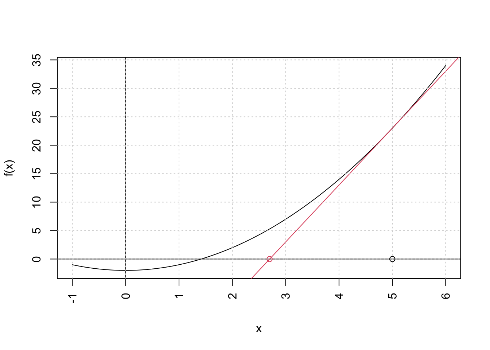
y <- 2
x <- vector(length = 10)
# Primeiro valor de x = 1
x[1] <- 5
# Loop
for (i in 1:9) {
x_chute <- x[i]
# Computa a distância
dist <- y - x_chute^2
# Atualiza o valor de x
x_chute_novo <- x_chute + dist / (2 * x_chute)
# Grava o valor de x para vermos a convergência
x[i + 1] <- x_chute_novo
}O gráfico abaixo mostra os próximos passos do algoritmo. Após poucas repetições já estamos muito próximos da resposta correta. Note que isto acontece porque estamos trabalhando com uma função bastante simples.
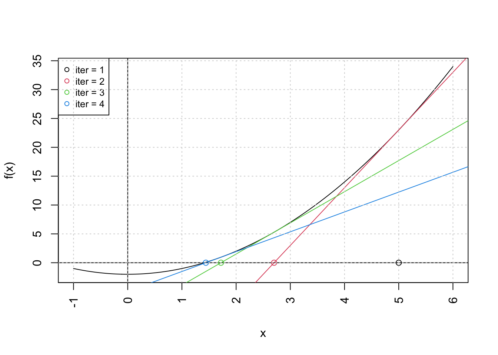
Pode-se generalizar o problema acima facilmente para encontrar a n-ésima raiz de qualquer valor. No código abaixo isto pode ser feito variando o valor de n. O código abaixo também é uma variação em relação aos anteiores. Ele é um repeat-break, ao invés do for-loop que estávamos usando acima. Isto é, ele repete uma operação enquanto alguma condição for válida. Assim, podemos exigir que o algoritmo pare quando algum critério de convergência for atingido. No caso abaixo, especifico que o loop pare quando a distância entre os valores sucessivos de \(x\) for muito pequena (menor que \(10^{-8}\)) ou quando o número de iterações chegar a 100 repetições.
# Dá pra melhorar um pouco o loop (usando repeat) e agora generalizar para n
y <- round(runif(n = 1, min = 0, max = 10^7))
x <- vector(length = 100)
x[1] <- (10^7 - 1) / 2
i <- 1
n <- 4
repeat {
x_chute <- x_chute_novo
dist <- y - x_chute^n
x_chute_novo <- x_chute + dist / (n * x_chute^(n - 1))
x[i + 1] <- x_chute_novo
# print(paste("iteration =", i))
if (abs(x_chute_novo - x[i]) < 10^(-8) | i > 99) {
break
}
i <- i + 1
}
plot(x[1:i + 1] - y^(1 / n), main = "Distância entre valor computado e valor verdadeiro", xlab = "Contagem da iteração", ylab = "Distância")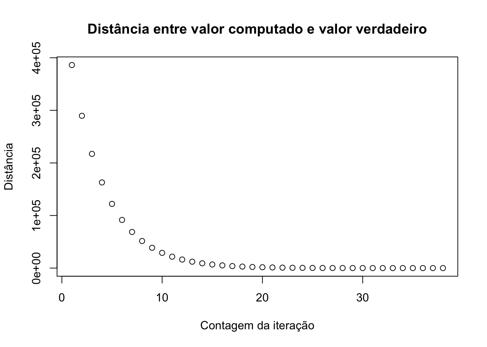
Minimizando funções
O método de Newton, descrito acima, pode ser aplicado para encontrar o mínimo de funções. Há vários problemas de otimização que podem ser resolvidos igualando a primeira derivada a zero. Nestes casos, podemos usar o método de Newton para encontrar o valor de \(x\) que faz com que função derivada \(f'(x)\) seja igual a zero. Substituindo \(f'(x)\) na expressão encontrada anteiormente:
\[ x_{n + 1} = x_{n} - \frac{f'(x)}{f''(x)} \]
Obviamente, é necessário que tanto \(f'(x)\) como \(f''(x)\) estejam bem definidas para que o método funcione. Na verdade, é preciso mais do que isto, mas vamos discutir estes problemas mais à frente. Vamos começar com o problema simples de encontrar o mínimo da função:
\[ f(x) = -2x^2 + (1/3)x^3 \]
Derivando e igualando a zero encontra-se os valores críticos \(0\) e \(4\). Usando a segunda derivada verifica-se que \(4\) é mínimo local. O gráfico abaixo mostra este ponto na função.
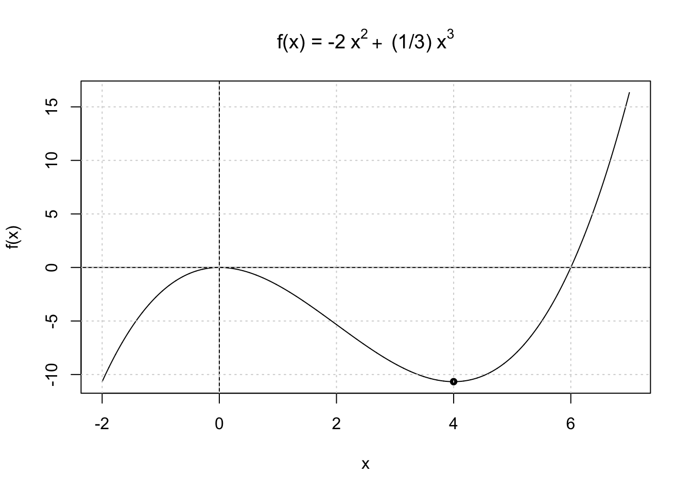
O código abaixo resolve este problema usando o método de Newton. Desta vez, uso o while apenas para exemplificar ainda mais uma forma de implementar este tipo de algoritmo.
# Objetos inicias
x <- vector(length = 100)
error <- 10
theta <- 10
delta <- 10^(-6)
i <- 0
# Função objetivo
f <- function(x) {
-2 * x^2 + (1 / 3) * x^3
}
# Loop
while (error > delta & i < 10) {
i <- i + 1
theta_0 <- theta
G <- -4 * theta + theta^2
H <- -4 + 2 * theta
theta <- theta_0 - G / H
x[i + 1] <- theta
error <- abs((theta - theta_0) / theta_0)
}Novamente, pode-se visualizar o funcionamento do otimizador visualmente num gráfico. Após poucos passos, o algoritmo converigiu para um valor muito próximo do correto.
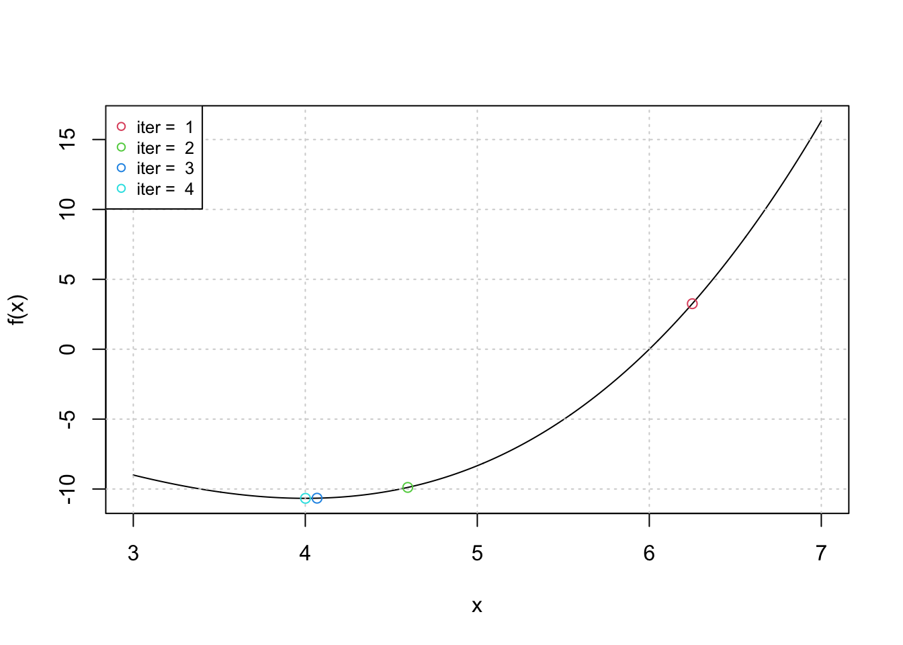
Na prática, a teoria é outra
Há vários casos em que o otimizador de Newton falha em encontrar o valor desejado. Isto pode acontecer tanto porque a função viola alguma das hipóteses do método como também porque a função é complicada. A função abaixo, por exemplo, falha em convergir pois a sua derivada é descontínua no zero (há uma “quina” no zero). O resultado é que o método diverge para \(\infty\).
\[ f(x) = |x|^{1/3} \]
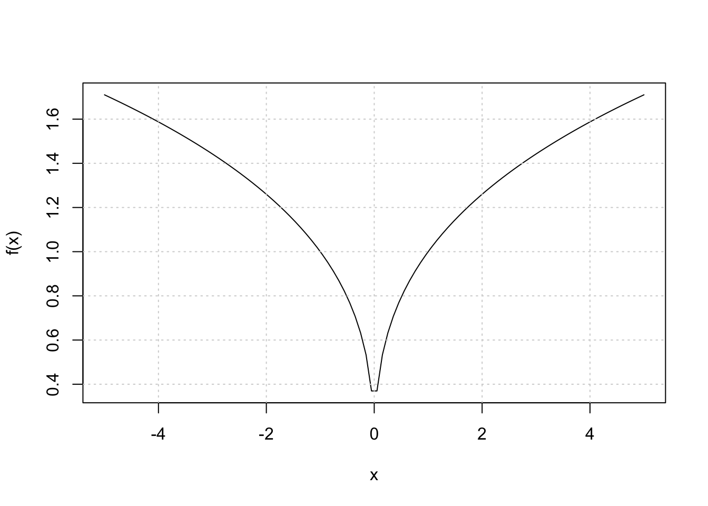
A tabela abaixo mostra os valores computados para as primeiras 10 iterações.
| Iteração | x | f(x) |
|---|---|---|
| 1 | 5 | 1.709976 |
| 2 | -10 | 2.154435 |
| 3 | -40 | 3.419952 |
| 4 | -160 | 5.428835 |
| 5 | -640 | 8.617739 |
| 6 | -2560 | 13.679808 |
| 7 | -10240 | 21.715341 |
| 8 | -40960 | 34.470955 |
| 9 | -163840 | 54.719230 |
| 10 | -655360 | 86.861364 |
Outro exemplo curioso em que o algoritmo falha em convergir é quando temos:
\[ f(x) = \left\{\begin{matrix} 0 & \text{se } x =0\\ x + x^2 sin(\frac{2}{x})) & \text{se } x \neq 0 \end{matrix}\right. \]
Ainda que a função seja contínua, temos uma descontinuidade na sua derivada e, como resultado, o otmizador fica osciliando entre valores sem nunca convergir para o zero.
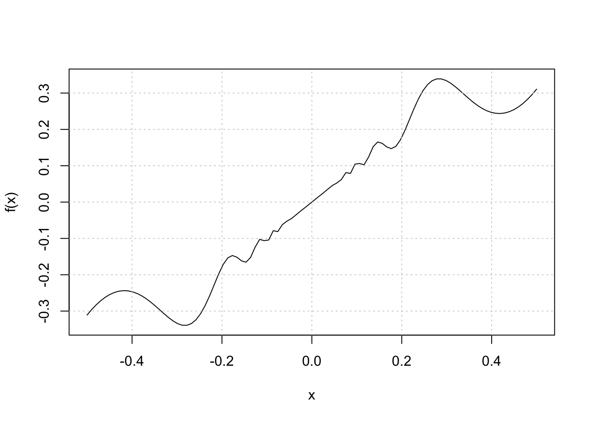
A tabela abaixo mostra os primeiros dez resultados:
| Iteração | x | f(x) |
|---|---|---|
| 1 | 5.0000000 | 14.7354586 |
| 2 | 0.1719653 | 0.1481520 |
| 3 | 0.4920907 | 0.2990380 |
| 4 | 0.2819031 | 0.3395412 |
| 5 | -10.3200755 | -30.8312710 |
| 6 | -0.0854544 | -0.0782425 |
| 7 | -0.0171313 | -0.0169891 |
| 8 | -0.0109142 | -0.0110166 |
| 9 | -3.4206997 | -9.8789235 |
| 10 | -0.2423414 | -0.2964612 |
Pode-se visualizar o comportamento do otimizador na animação abaixo. Mostro os primeiros 50 resultados. Note como o algoritmo fica pulando para todos os lados.
tbl <- data.frame(
x = x,
y = f(x),
label = 1:length(x)
)
ggplot() +
geom_function(fun = ~ ifelse(.x == 0, 0, .x + .x^2 * sin(2 / .x))) +
geom_hline(yintercept = 0) +
geom_vline(xintercept = 0) +
geom_point(data = tbl, aes(x = x, y = y), size = 2, color = "firebrick") +
geom_label(data = tbl, aes(x = x, y = y + 0.15, label = label)) +
scale_x_continuous(limits = c(-1, 1)) +
scale_y_continuous(limits = c(-1, 1)) +
transition_states(label) +
theme_light()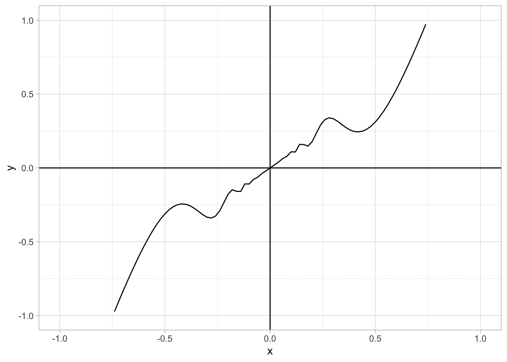
Em geral, o método de Newton sofre problemas com:
- Pontos inciais ruins. Às vezes uma escolha de ponto inicial ruim pode levar o otimizador a convergir para pontos diferentes. Em alguns casos, um ponto inicial ruim pode também levar o otimizador a ficar preso num ciclo.
exemplo: \(f(x) = x^3 - 2x + 2\) com \(x_{0} = 0\). O otimizador fica preso entre \(0\) e \(1\).
| Iteração | x | f(x) |
|---|---|---|
| 1 | 0 | 2 |
| 2 | 1 | 1 |
| 3 | 0 | 2 |
| 4 | 1 | 1 |
| 5 | 0 | 2 |
| 6 | 1 | 1 |
| 7 | 0 | 2 |
| 8 | 1 | 1 |
| 9 | 0 | 2 |
| 10 | 1 | 1 |
- Descontinuidades. Descontinuidades tanto na raiz da função, como em outras partes da função (como também na sua derivada) podem levar a problemas sérios de convergência.
exemplo: \(f(x) = |x|^{1/3}\) como apresentado acima.
- Funções difíceis. Algumas funções são simplesmente muito complicadas para o método de Newton. Em alguns casos, a convergência pode ser muito lenta e em outros o otimizador pode falhar completamente.
exemplo: \(f(x) = 7x - \text{ln}(x)\). A função tem mínimo global em \(x = 1/7\). Ainda assim, o método de Newton tem dificuldade em encontrar este valor (a não ser que o valor incial escolhido esteja muito próximo de \(1/7\)).
f <- function(x) {
7 * x - log(x)
}
grad_f <- function(x) {
7 - 1 / x
}
hess_f <- function(x) {
1 / x^2
}
theta <- 5
error <- 5
i <- 1
x <- vector(length = 50)
x[1] <- theta
error <- 1
while (error > 10^(-8) & i < 50) {
theta_0 <- theta
G <- grad_f(theta)
theta <- theta_0 - grad_f(theta) / hess_f(theta)
x[i + 1] <- theta
error <- abs((theta - theta_0) / theta_0)
i <- i + 1
}Usando funções de otimização
Na prática, métodos de otimização comuns como os de Newton já estão implementados de maneira eficiente no R. A principal função que se para otimização é a optim que já está instalada no pacote base do R. Atualmente, contudo, ela já está um pouco defasada e novos pacotes foram criados para suplementá-la. Discuto um pouco mais sobre alternativas ao optim no meu post sobre estimação por máxima verossimilhança.
\[ f(x,y) = (1-x)^2 + 100(y - x^2)^2 \]
A imagem abaixo usa o pacote rgl para mostrar a função em três dimensões.
fn_2 <- function(x, y) {
(1 - x)^2 + 100 * (y - x^2)^2
}
# Gráfico 3D
grid <- seq(from = -5, to = 5, length.out = 1000)
x <- grid
y <- grid
z <- outer(x, y, fn_2)
persp3d(x, y, z, col = "skyblue")O código abaixo é, essencialmente, igual aos que foram apresentados acima. A diferença é que agora o gradiente tem que ser montado como um vetor e a hessiana tem que ser implementada como uma matriz. Além disso, há um pequeno detalhe técnico na hora de montar a função fn. Como há dois parâmetros, talvez a maneira mais natural de escrever isto seria:
fn2 = function (x, y) { ... }
Mas isto não funciona bem com a função optim. O correto é montar uma função multivariada usando apenas um vetor numérico. Note que no código abaixo eu faço fn2 em função de theta e escrevo theta[1] no lugar de \(x\) e theta[2] no lugar de \(y\).
# parâmetros iniciais
x <- vector(length = 100)
error <- 10
theta <- 10
delta <- 10^(-6)
i <- 0
# a função
fn2 <- function(theta) {
(1 - theta[1])^2 + 100 * (theta[2] - theta[1]^2)^2
}
# gradiente
grad_fn2 <- function(theta) {
x <- theta[1]
y <- theta[2]
gx <- -2 * (1 - x) - 400 * x * (y - x^2)
gy <- (1 - x)^2 + 200 * (y - x^2)
c(gx, gy)
}
# hessiana
hess_fn2 <- function(theta) {
x <- theta[1]
y <- theta[2]
hxx <- 2 - 400 * (y - x^2) + 800 * x^2
hyy <- 200
hxy <- hyx <- -2 * (1 - x) - 400 * x
matrix(c(hxx, hxy, hyx, hyy), ncol = 2)
}
# Otimização usando loop e NR
theta <- c(-1.2, 1)
hist <- matrix(NA, ncol = 2, nrow = 100)
hist[1, ] <- theta
i <- 0
error <- c(1, 1)
while (i < 100 & error[1] > 10^(-8) & error[2] > 10^(-8)) {
theta_0 <- theta
G <- grad_fn2(theta)
H <- hess_fn2(theta)
theta <- theta_0 - solve(H) %*% G
hist[i + 1, ] <- t(theta)
error <- t(abs((theta - theta_0) / theta_0))
i <- i + 1
}
res <- na.omit(hist)O gráfico abaixo mostra a convergência do algoritmo. Note que o valor correto de ambos os parâmetros é \(1\).
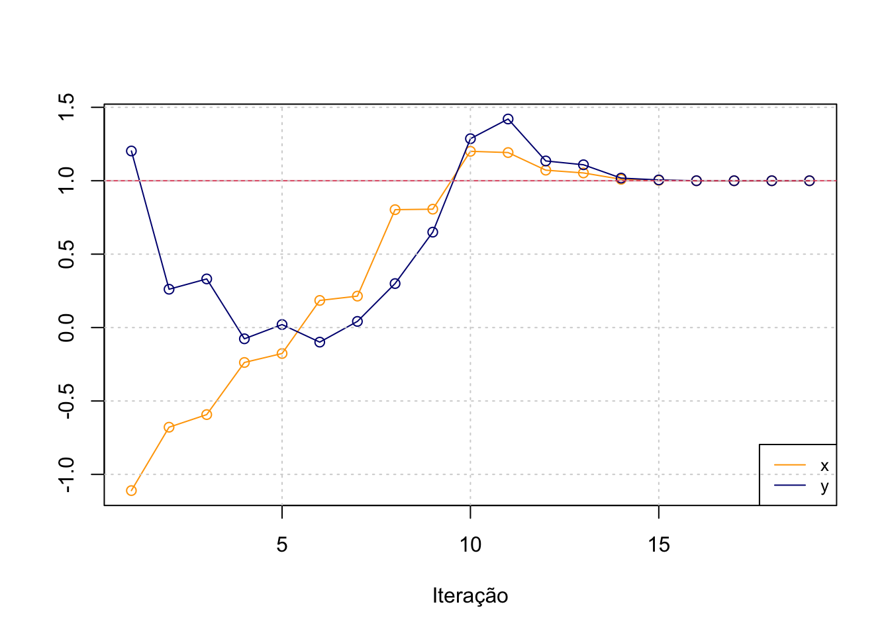
Por fim, uso a função optim para resolver o problema acima; o método BFGS é uma variante do método de Newton.
# Optim usando BFGS
optim(par = c(-1.2, 1), fn = fn2, method = "BFGS", control = list(trace = 1))initial value 24.200000
iter 10 value 1.370040
iter 20 value 0.132618
iter 30 value 0.001800
final value 0.000000
converged$par
[1] 0.9998044 0.9996084
$value
[1] 3.827383e-08
$counts
function gradient
118 38
$convergence
[1] 0
$message
NULL